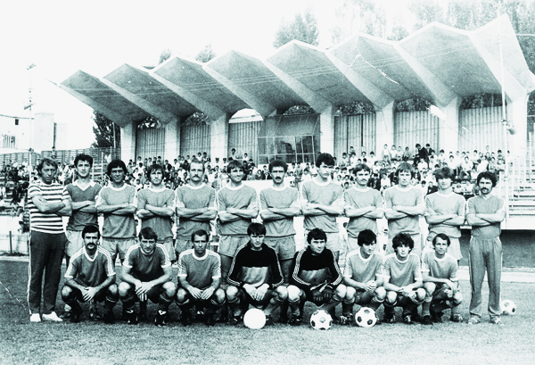
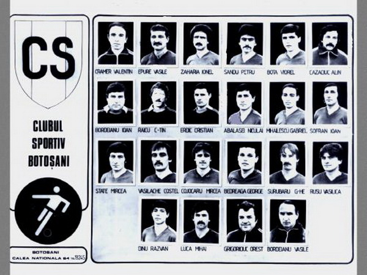
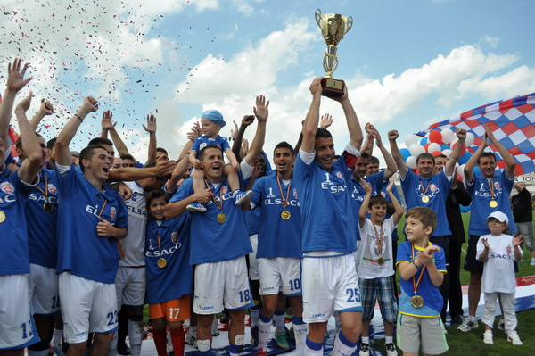

Despre noi - Istorie
-
Înainte celui de-al doilea război mondial principala echipă a orașilui a fost Venus, a cărei prezență în întrecerea divizionară a orașului este semnalată o singură dată, în anul competițional 1937-1938 (locul 6 în seria a 2-a, liga de este a Diviziei C). După război ia ființă, e lângă Fabrica de textile, în 1949, Asociația Sportivă Flamura Roșie, reprezentată în campionatul raional și regional de fotbal de formația cu același nume. În 1957 echipa texitiliților botoșăneni, purtând numele Textila, promovează în Divizia C, eșalon în care activează doi ani: 1957-1958, locul 10 și 1958-1959, locul 8. Au urmatalți patru ani în campionatul raional și regional (1959-1963), după care Textila (1963-1994 s-a numit Unirea) a revenit în divizia C: locul 9 în 1963-1964 și locul 8 în 1964-1965.
-
În continuare, în perioada 1965-1969 Textila a activat în campionatul regional și județean, iar din 1968 și-a reluat locul în Divizia C, clasându-se în șapte ediții de campionat pe următoarele poziții: locul 6 (1968-1969), locul 3 (1969-1970), locul 12 (1970-1971), locul 7 (1971-1972), locul 16 (1972-1973), locul 4 (1973-1974) ș locul 1 în 1974-1975, când echipa, sub titulatura C.S. Botoșani adoptată în 1973 promovează în Divizia B având în componența lotului pe Cotopoulos, Tomiță, Cucuveică, Ciobanu, Apostol, Manastire, Andries, Chiru, Macovei, Sofran, Mihăilescu, Porozan, Bălan, Babeti, Popescu, Tudor, Ciobanu, Perdevară, Roman, Damian, I. Popescu, Huțan, Costia, Haciu, Boboc, Văculițeanu, Ionescu, Tâmpea, Frâncu, Popa, Negoiță, Rusu, Zane, Șerbănică, V. Ion, Roca, Geambașu. Antrenor Silviu Avram.
-
Bordeianu – Trandafir, Bozi, Tomita, Epure – Tica, Sofran, Dumitru – Trohanel, Luca, Macovei
-
La prima prezență în Divizia B (1975-1976) echipa fanion a orașului ocupă locul 15 în Seria 2 și retrogradează. În anul următor, 1976-1977 C.S. Botoșani (antrenor Mircea Nedelcu) se clasează prima în Seria 1 a Diviziei C și revine în eșalonul secund. Dar nici de astă dată nu stă mai mult de un an (locul 17 în 1977-1978) în divizia secundă. În 1978-1979, cu antrenorul Silviu Avram, estedin nou campioana Serie 1 a Diviziei C și pentru a treia oară promovează în eșalonu divizionar B, unde, cu fiecare an competițional reușește să se impune prin evoluții bune și locuri corespunzătoare în clasament: 3 (sezonul 1979-1980, iar unsprezecele de baza: Bordeianu-Bozi, Tomita, Dudea, Luca – Sofran, Tica, Dumitru – Pachiteanu, Iancu, Macovei), 4 (1980-1981), 6 (1981-1982), 8 (1982-1983) și 9 (1983-1984), când antrenorul Dumitru Popescu (care i-a succedat Dumitru Dumitriu la conducerea tehnică a echipei) a rulat următorul lot de jucători: Bordeianu, Abalașei, Zaharia, Croitoru, Șofran, Ursu, Brihac, Biriș, Andreescu, Stângaciu, Epure, Dumitru, Iovu, Ene, Dărăban, Colindea, Nenică, Lungu, Honciuc, Luca, Pancu, Bucu.

foto: – sus, de la stanga la dreapta: Dobrin (antr. princ.), Moldovanu, Jean Ciobanu, Sofran, Ene, Vasiliu, Zaharia, Nicoara, Cucu, Iovu, Gruia, Fane Cretu (antr. sec.) – jos, de la stanga la dreapta: Polifronie, Epure, Ciuca, Erdic, Rotarescu, N. Abalasei, Otto Watzlawek, Croitoru.
Cel mai mare „vrajitor” al balonului din istoria fotbalului romanesc, Nicolae Dobrin si-a incheiat cariera de jucator si a debutat ca tehnician pe „Municipalul” din Botosani. In sezonul 1985-86, „Printul din Trivale” a venit la CS Botosani, unde in calitate de antrenor-jucator a condus echipa judetului, timp de un an in Divizia B. „A fost o perioada fantastica! Lumea umplea tribuna de pe” Municipal” la antrenamente pentru a-l vedea pe inegalabilul Dobrin, iar la meciuri, oamenii pur si simplu „inebuneau”, cind atingea mingea”, isi aminteste Paul Cucu, unul din componentii de atunci ai echipei.
CS Botosani a ramas in Divizia B pentru 11 sezoane, cele mai multe sezoane petrecute in aceasta liga de o echipa din Botosani, iar la sfarsitul sezonului 1989/1990 CS Botosani a retrogradat in Divizia C.

-
Dacă în ultimul an în care C.S. Botoșani evolua în divizia B, revoluția nu a adus nimic bun pentru fotbalul botoșănean, astfel că, în vara anului 1993 echipa părăsea al treilea eșalon, dar se stingea din viață, greutățile vremii punându-și amprenta dură și peste acest domeniu.
Viața și-a continuat cursul sinuos, cu necazuri și bucurii, cu visuri și speranțe, cu planuri și eșecuri. Suporterul botoșănean tânjea după duminicile pretrecute la stadion, de multe ori fără știrea nevastei, după paharul de semințe cu supliment al nemuritoarei Nadia, după înjurătura strașnică adresată unui arbitru venit la Botoșani cu un mesaj clar: astăzi nu e ziua voastră! Birturile târgului parcă uitat de lume gemeau de chiibiți care-și aminteau, între dușca de rachiu și țapul de bere, de echipa de aur a Botoșanilor. ”Propon”, ”Mako”, ”Dulap”, ”Mamulis”, ”Profesorul”, ”Piticul” erau câteva din poreclele care se încăpățânau să ia locul în buletin lui Bordeanu, Macovei, Luca, Daraban, Burcea, Dumitru și celorlalți frumoși nebuni care au făcut, ani la rând, din C.S. Botoșani ”arbitrul promovării”. Larma suporterilor din acea vreme, celebrul ”Hai C.S.-ul!” se auzea până la cimitirul Eternitatea, în poarta căruia vreun recent trecut în neființă întreba dispera pentru ultima dată: ”Cât e scrul?” -
Performante:– a jucat o optime de Cupa a României cu Gloria Bistrița, meci terminat 2-1 pentru bistrițeni după ce botoșănenii au avut și doua bare. Echipa s-a desființat după ce a vandut locul în Divizia C echipei Poli Iași (pe vremea aceea purtam titulatura de „Poli Unirea Iasi”)
După ce a asistat în 1999 la o înfrângere cu 5 la 0 a Flăcării Flămânzi, Ioan Sălavăstru, om de afaceri și avocat botoșănean a înființat Fotbal Club SA și a preluat formația din Flămânzi. În sezonul 2000-2001 clubul a fuzionat cu FCM Dorohoi și a jucat meciurile din retur la Botoșani. Așa a apărut ideea creării FC Botoșani, idee materializată în 2001 când Sălavăstru înființează Asociația Fotbal Club Botoșani.
”Unde-s doi puterea crește”. Cuplul Sălăvăstru – Șfaițer a reușit cooptarea altor ”bolnavi de fotbal”: Valeriu Iftime, Mihai Vrăjitoru, Liviu Manole, Tonino Boldea, Sergiu Timofte, Mihai Ivasuc și nu în ultimul rând Florin Egner, care a cooptat și Consiliul Local. Prin eforturile lor conjugate, ziua de 28 mai 2004 va rămâne în istoria și memoria botoșănenilor ca o zi mare: ziua promovării în divizia B! O zi în care șampania a curs cum n-a curs de multă vreme, o zi în care lacrimile de bucuirie și de fericire a tuturor botoșănenilor ar fi putut inunda gazonul stadionului ”Municipal”. Drenurile ar fi făcut cu greu față dacă am fi jucat ultima etapă pe teren propriu. -
Noul club FC BOTOȘANI a fost fondat în anul 2001 de domnul Sălăvăstru și este in acest moment singurul club din Botoșani care joaca în Liga 1.
Prima participare a acestui club în Divizia C, Seria I, sezonul 2001/2002 a dus la ocuparea unui onorabil loc doi la finalul campionatului. Urmatorul sezon, 2002/2003 FC BOTOȘANI se claseaza pe locul 6, iar în sezonul 2003/2004 clubul botoșănean reușește să promoveze în Divizia B după ce a depășit cu un singur punct în clasament echipa FCM Bacău II.
In 2005 dl. Valeriu Iftime, președintele Consiliului de Administratie, a preluat clubul după exemplul francez. In acest fel, prima echipă joacă în Liga a II-a și a doua echipă, formată din juniori, joacă în Liga a IV-a. De asemenea, clubul dispune de un Centru de Copii și Juniori care să asigure viitorul primei echipe.
In 2005 dl. Valeriu Iftime, președintele Consiliului de Administratie, a preluat clubul după exemplul francez. In acest fel, prima echipă joacă în Liga a II-a și a doua echipă, formată din juniori, joacă în Liga a IV-a. De asemenea, clubul dispune de un Centru de Copii și Juniori care să asigure viitorul primei echipe.
După un tur de campionat dezastruos, antrenorul Leontin Grozavu, ce a dus echipa pe locul 13, a fost concediat, în locul acestuia fiind numit Cristian Popovici. Acesta din urmă a reușit să redreseze echipa ducând-o pe locul 5. Sezonul 2008-2009 a adus echipei probleme financiare, s-a decis reorganizarea clubului și afilierea pentru sezonul 2009-2010 la FRF ca Asociație Sportivă (AS) și nu ca Societate pe Acțiuni (SA). Această transformare se va realiza pentru a putea permite echipei să fie sprijinită financiar de CJ Botoșani și CL Botoșani.
În primele 5 etape ale sezonului 2009-2010 echipa l-a avut antrenor principal pe Ștefan Apostol, dar după ce a obținut numai 3 puncte (la masa verde), acesta și-a dat demisia din funcția de antrenor în locul lui fiind numit Cristian Popovici. În perioada 2010-2012, clubul a continuat să joace în Liga a II-a. Astfel, în sezonul 2010-2011, termină pe locul 7 în clasament, iar în sezonul 2011-2012, termină pe locul 5.
În sezonul 2012-2013, FC Botoșani a terminat turul pe locul 4 la trei puncte de liderul din acel moment. Clubul reușește să își asigure matematic pentru prima dată promovarea în prima ligă a fotbalului românesc la data de 18 mai 2013, când învinge cu 4-0 pe Sportul Studențesc într-un meci contând pentru etapa a XXVII-a. În acest sezon echipa reușește și o serie de 14 meciuri fără înfrângere, urcând pe poziția 1. În Cupa României 2012-2013 reușește să ajungă până în optimi, fiind eliminată de campioana entitre, CFR Cluj. -

La debutul în prima ligă FC Botoșani a egalat recordul all-time al unui start de sezon pentru o nou-promovată, stabilit de Locomotiva Buucurești în 1956 când a reușit șapte meciuri consecutive fără eșec în campionat. Această serie de șapte meciuri a început cu egalul (scor 0 la 0) scos pe teren propriu în fața celor de la CFR Cluj la data de 21 iulie 2013. Performanța reușită de trupa pregătită în prima parte a campionatului de Cristian Popovici, munca acestuia fiind continuată cu un scurt interimat de Valeriu Bordeanu și dusă la capăt de Leo Grozavu, este cu atât mai răsunătoare cu cât FC Botoșani este echipa din Liga 1 care a avut cei mai mulți debutanți la nivelul primului eșalon valoric al țării. Totodată, echipa locală a avut la dispoziție și cel mai mic buget din toate cele 18 formații care s-au aliniat la startul campionatului.